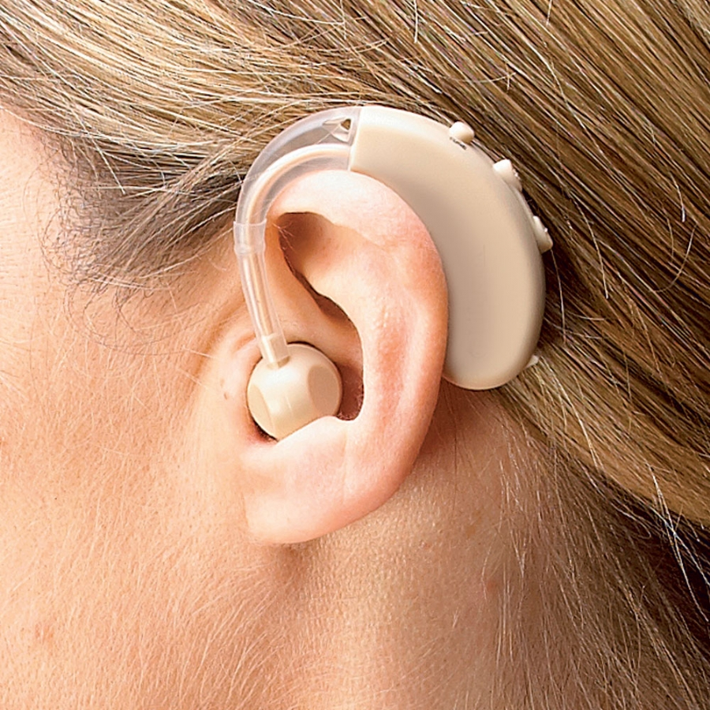

Dylan Sheffer
Accessibility Isn't Inaccessible!
Overview
- What it is and why it is important
- Foundational knowledge
- How assistive tech interprets our sites
What is Accessibility?
Making your site usable by everybody regardless of ability.
Increase
Customer Pool
No Lawsuits
Better UX
RealTalk
It is critical we do this right
(Comedic Reset)

WCAG
Web Content Accessibility Guidelines
The official guidelines published by the W3C on how to make the web accessible.

P.O.U.R
Perceivable
Operable
Understandable
Robust
Perceivable
Available to the senses either through the browser or through assistive technologies.
Operable
Users can interact with all controls and interactive elements using either the mouse, keyboard, or an assistive device.
Understandable
Content is clear and limits confusion and ambiguity.
Robust
A wide range of technologies and devices can access the content.
Types of Disabilities
Motor
Visual
Auditory
Cognitive
Neurological
Temporary
Accessibility Principle to Focus On
Operable
Not everyone can use a mouse, click on small links, or operate dynamic elements effectively
Assistive Tech for Motor Disabilities

Accessibility Principles to Focus On
Perceivable
Cannot see visual information such as graphics, layout, or color-based cues
Operable
Usually depend on a keyboard to navigate web content functionality, rather than a mouse
continued...
Accessibility Principles to Focus On
Understandable
Cannot understand content that is presented in an illogical linear order
Contains text not meant to be read word for word
Robust
Not always capable of accessing a broad range of technologies
Assistive Tech for Visual Disabilities


Color Correcting Glasses
All About Vision
Accessibility Principles to Focus On
Perceivable
Cannot hear auditory content
Assistive Tech for Auditory Disabilities


Hearing Aids
 Hearing Aid Buyer Today
Accessibility Principles to Focus On
Perceivable
Distracting banner ads can take attention from content
Operable
Shouldn't depend on remembering information
continued...
Accessibility Principles to Focus On
Understandable
Not able to understand what an icon represents on a page.
Robust
Site sometimes loaded into "Reader" views
How does assistive tech work with websites?
Accessibility Tree
A tree representation of the webpage that contains all meta-data about every page element.

What Assistive Tech Sees from the Tree
Name
State
Role
Value
Accessibility isn't Inaccessible
- Awareness
- Context
- Empathy
Thank You!
Questions⁉
Tools and Resources
- Heydon Pickering- Inclusive Components
- Laura Kalbag- Accessibility For Everyone
- WebAIM - Excellent Guides and Articles
- Excellent Tools, webinars, guides, podcasts, etc
- A11y Cast with Rob Dodson
- Google Developer Accessibility Docs
- OATMEAL - EBay's Open Accessibility Guidelines
- A11y Project - Beginners Checklist
- aXe Accessibility Audit Plugin
- HTML Code Sniffer
- Part of a Whole Blog
- Reach - Accessible React Components
- Bulb Audit - Open Sourced Professional A11y Audit
- Color Safe - A11y Color Pallet Generator
- 18f - A11y Guide
- Color Blindness Simulator for Chrome